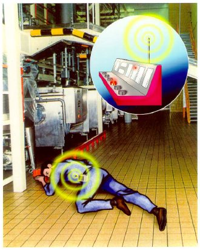
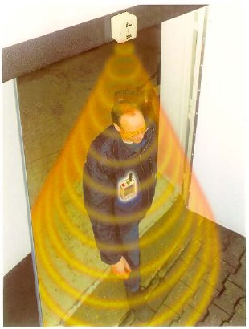

3.1 |
Allgemeines |
| Nach § 25 der Unfallverhütungsvorschrift "Grundsätze der Prävention" (BGV/GUV-V A1) hat der Unternehmer unter Berücksichtigung der betrieblichen Verhältnisse durch Meldeeinrichtungen und organisatorische Maßnahmen dafür zu sorgen, dass bei einem Notfall unverzüglich die notwendige Hilfe herbeigerufen und an den Einsatzort geleitet werden kann. | |
| Da diese Forderung insbesondere auch für Einzelarbeitsplätze gilt, hat der Unternehmer in Abhängigkeit von der Gefährdung an Einzelarbeitsplätzen geeignete Maßnahmen der Überwachung zu treffen. | |
| Nach § 8 der Unfallverhütungsvorschrift "Grundsätze der Prävention" (BGV/GUV-V A1) hat der Unternehmer bei gefährlichen Arbeiten eine Überwachung der allein arbeitenden Person sicherzustellen. Diese Überwachung kann unter anderem auch durch Personen-Notsignal-Anlagen erfolgen. |
| Mit den am Körper der allein Arbeitenden zu tragenden Personen-Notsignal-Geräten kann im Notfall sowohl willensabhängig als auch willensunabhängig in der Personen-Notsignal-Empfangszentrale Personen-Alarm ausgelöst werden. Die Übertragung der Notsignale erfolgt drahtlos und wird in der Personen-Notsignal-Empfangszentrale optisch und akustisch angezeigt (Bild 1). |
 |
| Bild 1: | Schema einer Personen-Notsignal-Anlage |
3.2 |
Verbot von Einzelarbeitsplätzen (EAP) |
| Ist in staatlichen oder Vorschriften der Unfallversicherungsträger die Einrichtung von Einzelarbeitsplätzen nicht zulässig, darf dieses Verbot auch nicht durch den Einsatz von Personen-Notsignal-Anlagen umgangen werden. |
3.3 |
Bereitstellung |
| Nachfolgend werden die bis zum Einsatz einer Personen-Notsignal-Anlage erforderlichen Schritte erläutert. |
3.3.1 |
Gefährdungsermittlung und Beurteilung der Arbeitsbedingungen |
3.3.1.1 |
Allgemeines |
Nach § 5 Arbeitsschutzgesetz hat der Unternehmer die mit der Alleinarbeit verbundenen Gefährdungen zu ermitteln und die Arbeitsbedingungen zu beurteilen. Auf Grund der Beurteilung sind geeignete Maßnahmen vorzusehen und nach § 6 Arbeitsschutzgesetz zu dokumentieren. |
| Sicherheit und Gesundheitsschutz bei der Arbeit sind ganzheitlich unter Einbeziehung der physischen und psychischen Belastungen zu betrachten. Es werden alle relevanten Gefährdungsfaktoren ermittelt. Diese können der Tabelle 1 "Mögliche Gefährdungsfaktoren" der Regel "Grundsätze der Prävention" (BGR/GUV-R A1, Abschnitt 2.2.1) entnommen werden. | |
| Siehe auch Anhänge 1 bis 3. |
Nach der Gefährdungsermittlung ist es erforderlich, für den Einzelarbeitsplatz eine gesonderte Risikobeurteilung durchzuführen. Die Beurteilung erfolgt anhand der in Tabelle 2 aufgeführten Gefährdungsstufen sowie der Notfallwahrscheinlichkeit (Tabelle 3) und der Zeit bis zum Beginn von Hilfsmaßnahmen (Tabelle 4). Für die Gefährdungsstufen "Kritische Gefährdung" und "Erhöhte Gefährdung" sind zusätzliche Randbedingungen zu berücksichtigen, die aus den Tabellen 2 und 3 entnommen werden können. |
| Bei der Gefährdungsermittlung und bei der Beurteilung der Arbeitsbedingungen sollten vom Unternehmer die Fachkraft für Arbeitssicherheit, der Betriebsarzt, die Personalvertretung, der Sicherheitsbeauftragte und die betroffenen Mitarbeiter hinzugezogen werden. Es wird empfohlen, den zuständigen Unfallversicherungsträger einzubeziehen. |
// Tabelle 1: |
Liste der mögliche Gefährdungsfaktoren // |
|
3.3.1.2 |
Wahrscheinlichkeit eines Notfalls |
Hier wird bewertet, wie hoch die Wahrscheinlichkeit ist, dass ein Notfall überhaupt konkret auftreten kann (siehe Tabelle 3; sie wird hierin als "Notfallwahrscheinlichkeit" mit "NW" bezeichnet). |
|
| Hinweis: Bei mehr als einem Gefährdungsfaktor der Tabelle 1 oder bei einer bestimmten Tätigkeit ist die Bewertungsziffer NW um mindestens 1 zu erhöhen. |
| Kommen zwei oder mehr Gefährdungsfaktoren zusammen, ist davon auszugehen, dass die Wahrscheinlichkeit des Eintretens eines Notfalls höher einzustufen ist. |
Tabelle 3: Wahrscheinlichkeit eines Notfalls |
|||||||||||||
3.3.1.3 |
Einleitung von Hilfsmaßnahmen |
Für eine abschließende Beurteilung des Risikos bei gefährlichen Einzelarbeitsplätzen ist die Zeit zwischen dem Auslösen des Personen-Alarms und dem Beginn von Hilfsmaßnahmen am Ort des Geschehens mit zu berücksichtigen. |
|
|||||||||||||||||||
| Um im Alarmfall die in der Tabelle 4 genannten Zeiten einhalten zu können, müssen betriebsbezogene organisatorische Maßnahmen bis zum Beginn von Hilfsmaßnahmen gewährleistet sein (z.B. Erstversorgung). | |
| In Anhang 2 dieser Regel ist zur Orientierung eine diesbezügliche Vorgehensweise in Form eines Ablaufschemas beschrieben. | |
| Beträgt die Zeit bis zum Beginn von Hilfsmaßnahmen mehr als 15 Minuten, ist die Effektivität der Rettungskette nicht gewährleistet. In solchen Fällen dürfen Personen-Notsignal-Anlagen nicht eingesetzt werden. |
3.3.1.4 |
Risikobeurteilung |
Bereits durch die Einteilung in die Gefährdungsstufen ergeben sich in Abhängigkeit der Einstufung folgende Konsequenzen: |
|
Gefährdungsstufe gering: Bei einer geringen Gefährdung ist eine Überwachung von Einzelarbeitsplätzen grundsätzlich nicht erforderlich. |
|
Gefährdungsstufe erhöht: Bei einer erhöhten Gefährdung ist eine Überwachung des Einzelarbeitsplatzes, z.B. durch Kontrollgänge oder Kontrollanrufe, erforderlich, wenn die Notfallwahrscheinlichkeit (nach Tabelle 3) nicht höher als mäßig einzustufen ist. Ist die Wahrscheinlichkeit eines Notfalls als hoch einzustufen, wird eine ständige Überwachung erforderlich, wie sie bei kritischen Gefährdungen vorgeschrieben ist. |
|
Gefährdungsstufe kritisch: Bei einer besonderen Gefährdung ist eine ständige Überwachung erforderlich z.B. durch:
|
|
| Alleinarbeit ist nicht zulässig, wenn beim Vorliegen einer kritischen Gefährdung die Wahrscheinlichkeit eines Notfalls (nach Tabelle 3) als hoch eingestuft werden muss. | |
| Zur abschließenden Beurteilung des Risikos (R) werden die Bewertungsziffern aus den Tabellen 2 bis 4 wie folgt verknüpft: |
| Der Wertebereich kann somit zwischen und dem Maximalwert |
R = (1+0) x 1 = 1 R = (10+2) x 10 = 120 liegen. |
| Die Risikobeurteilung bereitet die zu treffende Entscheidung vor, ob das vorhandene Risiko akzeptabel oder nicht akzeptabel ist. | |
| Für ein akzeptables Risiko darf R einen Wert von 30 nicht überschreiten. | |
| Bei Überschreitung dieses Wertes (nicht akzeptables Risiko, Gefahrfall) sind zusätzliche technische und organisatorische Maßnahmen zur Risikominimierung zu treffen, so dass sich die Gefährdungsziffer oder die Notfallwahrscheinlichkeit zuverlässig verringern. | |
| Sind Maßnahmen zur Risikominimierung nicht möglich und ist R >30, ist eine Alleinarbeit nicht zulässig! |
| Gefährdungen, die durch vorsätzliche Handlungen verursacht werden, können durch die Formel zur Risikobeurteilung nicht erfasst werden. Eine Hilfestellung für die Entscheidungsfindung liefert das Ablaufschema im Anhang 1. |
Die Reaktionszeiten für das Personen-Notsignal-Gerät müssen gefährdungsabhängig eingestellt werden (siehe Tabelle 6). |
| Hinweis: Ergibt die Einstufung der Gefährdung, dass der Einsatz einer Personen-Notsignal-Anlage nicht erforderlich wird, dann gibt die Information "Notrufmöglichkeiten für allein arbeitende Personen" (BGI/GUV-I 5032) weitere Hinweise für Alarmierungsmöglichkeiten an Einzelarbeitsplätzen. |
3.3.2 |
Personen-Notsignal-Anlagen |
Personen-Notsignal-Anlagen sind so beschaffen, dass bei Personen- und Technischen Alarmen die Identität der allein Arbeitenden durch die Nummer der auslösenden Personen-Notsignal-Geräte in der Personen-Notsignal-Empfangszentrale bestimmt werden kann. Voraussetzung für das Auslösen eines Personen-Alarms ist, dass eine Verbindung zwischen dem Personen-Notsignal-Gerät und der Personen-Notsignal-Empfangszentrale besteht. Deshalb sind Personen-Notsignal-Anlagen mit einer Überwachungseinrichtung ausgerüstet, mit der die Übertragung der Sendesignale zwischen den Personen-Notsignal-Geräten und der Personen-Notsignal-Empfangszentrale regelmäßig automatisch geprüft wird. Ein Ausfall der Übertragung der Sendesignale wird optisch und akustisch in der Personen-Notsignal-Empfangszentrale angezeigt (Technischer Alarm). |
|
| Um eine stets einwandfreie Funktionsfähigkeit aller Alarm-Auslösearten sicherzustellen, sind Personen-Notsignal-Anlagen mit einer Einrichtung ausgerüstet, durch die bei jedem neuen Einsatz, sowie nach 24 Stunden Betriebszeit eines Personen- Notsignal-Gerätes, ein Test aller vorhandenen Alarmauslösearten bis hin zu den Meldeeinrichtungen in der Personen-Notsignal-Empfangszentrale durch Betätigung erforderlich wird. Ohne erfolgreich durchgeführten Test wird vom jeweiligen Personen-Notsignal-Gerät keine Betriebsbereitschaft signalisiert. | |
| Die Personen-Notsignal-Empfangszentrale verfügt über eine Schnittstelle für den Anschluss eines externen Protokolldruckers oder einer anderen Aufzeichnungseinrichtung um Personen- und Technische Alarme aufzeichnen zu können. | |
| Ebenfalls ist die Personen-Notsignal-Empfangszentrale (PNEZ) bzw. Personen-Notsignal- Empfangszentrale mit der Möglichkeit der Sprachkommunikation (PNEZ-S) mit einer vom Netz unabhängigen Notstromversorgung ausgerüstet, die die Funktion der Personen-Notsignal-Anlage zwischen 10 Minuten (PNEZ-S) und 30 Minuten (PNEZ) bei Netzausfall sicherstellt. |
| Geräte- und Prüfanforderungen für Personen-Notsignal-Anlagen sind in der Vornorm DIN V VDE V 0825-1 "Überwachungsanlagen; Drahtlose Personen-Notsignal-Anlagen für gefährliche Alleinarbeiten; Teil 1: Geräte- und Prüfanforderungen" geregelt. |
3.3.3 |
Personen-Notsignal-Geräte |
Personen-Notsignal-Geräte sind neben der Grundfunktion mit unterschiedlichen Zusatzfunktionen erhältlich (Tabelle 5). |
|||||||||||||||
Tabelle 5: Übersicht über mögliche Funktionen von Personen-Notsignal-Geräten |
Mit jedem Personen-Notsignal-Gerät kann ein willensabhängiger Alarm, durch Drücken der Notsignaltaste und zusätzlich ein oder mehrere willensunabhängige Alarmfunktionen über unterschiedliche Sensoren ausgelöst werden. Durch Auswahl von verschiedenen willensunabhängigen Alarmfunktionen lässt sich das Personen-Notsignal-Gerät genau auf die jeweilige Gefährdung abstimmen. |
|
| Vor Auslösung des willensunabhängigen Personen-Alarms wird in der Regel vom Personen-Notsignal-Gerät ein Voralarm gegeben, der vom Träger des Personen-Notsignal-Gerätes innerhalb von maximal 15 Sekunden rückgesetzt werden kann. | |
| Die höchstzulässigen Reaktionszeiten bis zur Auslösung von Personen-Alarm sind in der Tabelle 6 festgelegt. | |
| Personen-Notsignal-Geräte sind so beschaffen, dass Einstellungen nur durch autorisiertes Personal verändert werden können. Um sicherzustellen, dass nicht benutzte Personen-Notsignal-Geräte aufgeladen werden, ist für jedes Gerät eine eigene Ladevorrichtung erforderlich. |
| Personen-Notsignal-Geräte sind bauartbedingt während des bestimmungsgemäßen Einsatzes nicht abschaltbar. Ein Technischer Alarm kann nur vermieden werden, wenn die nicht benutzten Personen-Notsignal-Geräte in der Ladevorrichtung aufbewahrt werden. |
Für den Einsatz in explosionsgefährdeten Bereichen müssen Personen-Notsignal-Geräte der Explosionsschutzverordnung – 11. GSGV entsprechen. |
3.4 |
Einsatz von Personen-Notsignal-Anlagen |
3.4.1 |
Allgemeines |
Hat die Risikobeurteilung ergeben, dass eine Personen-Notsignal-Anlage zur Überwachung der gefährlichen Alleinarbeit geeignet und zulässig ist, sind vor einem Einsatz die Voraussetzungen nach Abschnitt 3.4.2 zu erfüllen. Siehe auch Abschnitt 3.2 "Verbot von Einzelarbeitsplätzen". |
|
| Geeignet sind z.B. Personen-Notsignal-Anlagen, die der Vornorm DIN V VDE V 0825-1 entsprechen und die eine Bauartprüfung durchlaufen haben. |
| Der Einsatz einer PNA unter Nutzung öffentlicher Telekommunikationsnetze (PNA-11) nach DIN V VDE V 0825-11 ist ebenfalls möglich, aber nur zulässig, wenn alle technischen und organisatorischen Voraussetzungen dieser Regel erfüllt sind; siehe auch BGI/GUV-I 5032, Abschnitt 7. |
3.4.2 |
Voraussetzungen für den Einsatz |
Tabelle 6: Höchstzulässige Reaktionszeiten |
|||||||||||||||||||||
 |
|
| Bild 2: Beispiel für die Lokalisierung des Alleinarbeiters |
3.4.3 |
Technischer Alarm, Ausfall der Personen-Notsignal-Anlagen |
Der Unternehmer hat dafür zu sorgen, dass bei Ausfall der Personen-Notsignal-Anlage bzw. bei Technischem Alarm gefährliche Alleinarbeiten bis zur Beseitigung der Störungen unverzüglich anderweitig überwacht oder eingestellt werden. Die Überwachung kann z.B. durch eine zweite Person erfolgen. |
3.4.4 |
Dokumentation von Alarmen |
Jeder Personen-Alarm und jeder Technische Alarm muss dokumentiert werden. Da alle Personen-Notsignal-Empfangszentralen über entsprechende Schnittstellen verfügen, empfiehlt es sich, die Dokumentation der Alarme automatisch z.B. über Protokolldrucker oder andere Aufzeichnungseinrichtungen durchzuführen. |
3.4.5 |
Zurücksetzung in Betriebsstellung |
Personen-Notsignal-Geräte dürfen nach Personen-Alarm nur in Absprache mit der Personen-Notsignal-Empfangszentrale in Betriebsstellung zurückgesetzt werden, nachdem die notwendigen Hilfsmaßnahmen eingeleitet worden sind. Die Mitnahme von Einrichtungen für das Zurücksetzen in Betriebsstellung der Personen-Notsignal-Geräte durch die allein Arbeitenden ist nicht zulässig. Die akustische Anzeige eines Personen-Alarms bzw. optische und akustische Anzeige eines Technischen Alarms darf in der Personen-Notsignal-Empfangszentrale erst gelöscht werden, nachdem Maßnahmen, z.B. zur Ersten Hilfe bzw. nach Abschnitt 3.4.3, eingeleitet worden sind. Die optische Anzeige eines Personen-Alarms in der Personen-Notsignal-Empfangszentrale darf erst gelöscht werden, nachdem die Personen-Notsignal-Geräte in Betriebsstellung zurückgesetzt worden sind. |
3.4.6 |
Betriebsanweisung |
Der Unternehmer hat für den Einsatz von Personen-Notsignal-Anlagen eine Betriebsanweisung zu erstellen, die Angaben über den sicheren Betrieb der Personen- Notsignal-Anlagen, das Verhalten bei Personen-Alarmen und bei Störungen enthält. Die Versicherten haben die Betriebsanweisung zu beachten. |
| Musterbeispiel siehe www.dguv.de (Webcode d35669) Siehe §§ 6 und 15 Arbeitsschutzgesetz. |
3.4.7 |
Unterweisung |
Der Unternehmer hat dafür zu sorgen, dass die Träger von Personen-Notsignal-Geräten und die in der Personen-Notsignal-Empfangszentrale beschäftigten Versicherten vor Aufnahme ihrer Beschäftigung und danach in angemessenen Zeitabständen, mindestens jedoch einmal jährlich, unter Berücksichtigung der Betriebsanweisung unterwiesen werden. |
| Siehe § 12 Arbeitsschutzgesetz und § 4 Abs. 1 der Unfallverhütungsvorschrift "Grundsätze der Prävention" (BGV/GUV-V A1). |
3.4.8 |
Alarmübung |
Der Unternehmer hat dafür zu sorgen, dass vor der ersten Inbetriebnahme von Personen-Notsignal-Anlagen und danach mindestens einmal jährlich, bei einer Alarmübung die Wirksamkeit aller geplanten betrieblichen Hilfsmaßnahmen geprüft wird. |
3.4.9 |
Beschäftigungsbeschränkung |
Der Unternehmer darf in der Personen-Notsignal-Empfangszentrale nur geeignete Versicherte beschäftigen, die das 18. Lebensjahr vollendet haben, mit den Einrichtungen und Verfahren vertraut und unter Berücksichtigung der Betriebsanweisung unterwiesen sind. Dies gilt nicht für die Beschäftigung Jugendlicher, soweit
|
| Siehe § 22 Abs. 2 Jugendarbeitsschutzgesetz. Fachkundige Aufsicht (Aufsichtführender) ist, wer die Durchführung von Arbeiten zu überwachen und für die betriebssichere Ausführung zu sorgen hat. Er muss hierfür ausreichende Kenntnisse und Erfahrungen besitzen sowie weisungsbefugt sein. |
3.4.10 |
Funktionstest |
Der Unternehmer hat dafür zu sorgen, dass Personen-Notsignal-Anlagen vor Arbeitsaufnahme durch Funktionstest und Inaugenscheinnahme auf einwandfreien Zustand geprüft werden. |
3.4.11 |
Aus- und Rückgabe der Personen-Notsignal-Geräte |
Träger von Personen-Notsignal-Geräten haben die für ihre Arbeiten vorgesehenen Personen-Notsignal-Geräte persönlich in Empfang zu nehmen, bestimmungsgemäß anzulegen und bei unterbrochener oder nach beendeter Arbeit persönlich zurückzugeben. Beim Einsatz sind der Zeitpunkt der Ausgabe und Rückgabe sowie ggf. die Einsatzbereiche zu dokumentieren. |
| Aus- und Rückgabestelle kann z.B. die innerbetriebliche Personen-Notsignal-Empfangszentrale sein. |
Werden am Personen-Notsignal-Gerät Mängel festgestellt, sind die Geräte unverzüglich persönlich zurückzugeben. |
| Mängel können z.B. bei dem arbeitstäglichen Funktionstest festgestellt werden. |
3.4.12 |
Betrieb, Wartung, Änderung und Instandsetzung |
Personen-Notsignal-Anlagen dürfen entsprechend den Herstellerangaben keinen Einflüssen ausgesetzt werden, die ihren sicheren Zustand beeinträchtigen können. Derartige Einflüsse können z.B. aggressive Atmosphäre, extreme Temperaturen sein. |
Der Unternehmer hat dafür zu sorgen, dass Personen-Notsignal-Anlagen entsprechend den Herstellerangaben gewartet werden. |
|
Personen-Notsignal-Anlagen dürfen nur vom Hersteller oder von vom Hersteller beauftragten Personen geändert oder instand gesetzt werden. |
Änderungen sind z.B.
|
3.4.13 |
Prüfungen |
Der Unternehmer hat nach § 10 der Betriebssicherheitsverordnung Personen-Notsignal-Anlagen vor der ersten Inbetriebnahme und nach Instandsetzungsarbeiten durch eine befähigte Person prüfen zu lassen. |
| Befähigte Person ist, wer durch seine Berufsausbildung, seine Berufserfahrung und
seine zeitnahe berufliche Tätigkeit über die erforderlichen Fachkenntnisse zur Prüfung
von PNA verfügt. Dies sind z.B. Kundendienstmonteure der Hersteller von Personen-Notsignal-Anlagen. |
Der Unternehmer hat Personen-Notsignal-Anlagen entsprechend den Benutzungsbedingungen und den betrieblichen Verhältnissen nach Bedarf (mindestens jährlich), auf ihren einwandfreien Zustand und Funktionsfähigkeit durch eine befähigte Person prüfen zu lassen. |
|
Die Ergebnisse der Prüfungen nach Abschnitt 3.4.13 sind in einem Prüfbericht zu dokumentieren und bis zur nächsten Prüfung aufzubewahren. |